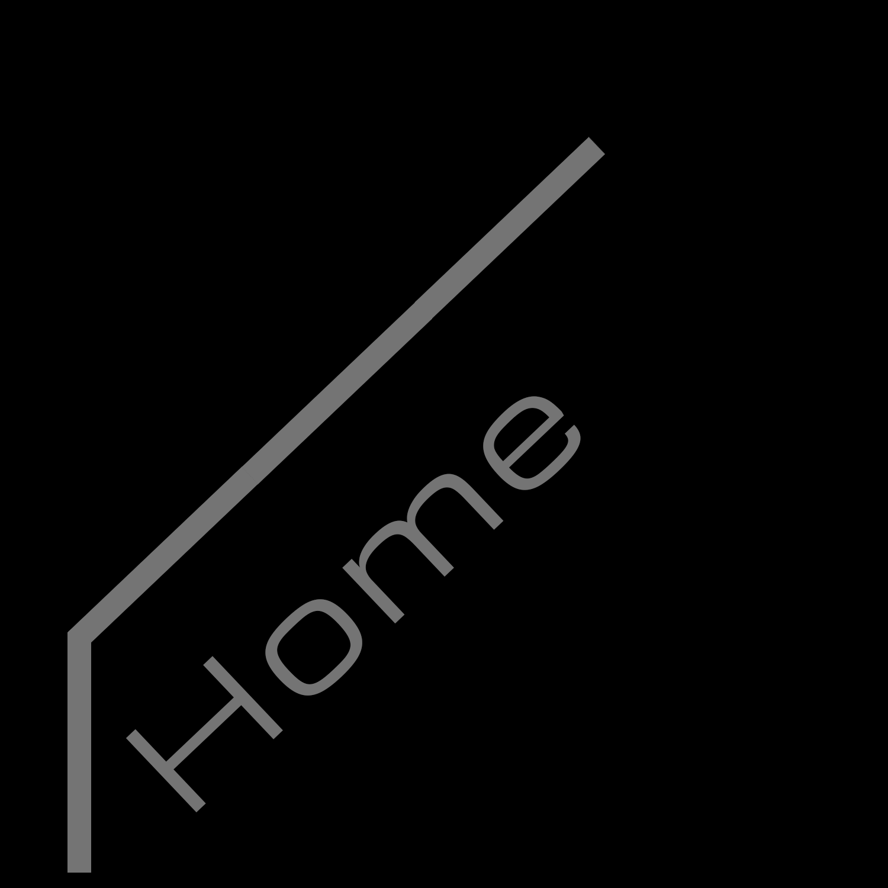

 


So I see you've made it to the "About me" page, which clearly means you wanna know somehting about me. Good Choice. Not many people make it this far, but since you're here I suppose I should grant you the knowledge you seek.
So, I guess I'll start with who I actually am. My name is Chance Clarke, not "Gearshifter09". I'm a Jamaican American Brotha raised by a single Jamaican American Motha, brought up with my little sista and brotha in a household of 4. The name "Gearshifter09" comes from 3 things. My love of cars, my love of Transformers and my love of Transformers who turn into cars. The "09" is simply the year I made my Xbox Live Gamertage which is also, can you gues it, Gearshifter09. It also kind of represents my state of mind, always shifting and turning, speeding up or slowing down the car, which would be my drive in this case, depending on the situation at hand. Currently, I'm a DMD (Digital Media and Design) major. My overall goal is to one day hit the big screen as a director and make films, good films. The kind of stuff you can go out and see and have a great time watching. With great character development, animation and all that. A little ambitious, I know. But, if you're gonna aim for something, might as well aim high right?
This, that being the goal to make movies, all started in the 6th grade. Up until that point, I'd wanted to be a firefighter and help people in need. But that changed when I saw the movie "Transformers", yes...the Micheal Bay one. And no, I didnt think the movie was so terrible that I wanted to redo it. I thought it was the single greatest thing I had ever seen and I wanted to make stuff just like it (I was 10, ok?) This drove me to writing my own films, getting a camera and making my own stop motion Transformers animations, and eventually lead me to "acquiring" Cinema 4D R14 through maybe not the most legal of methods. I really wanted, and still want, to make movies that give people something great and beautiful to look at. And, after 9 years of pursuing that dream, I feel like I'm am closer to that dream than I have ever been. Having learned Adobe After Effects, Priemiere Pro, Illustrator, Photoshop, Maya, Blender and many other programs (not to mention Cinema 4D, which I've become quite a bad ass in utilizing) I'd say I'm well underway to realising that dream. Not only can I work the fundamental visual programs, I'm a pretty damn decent writer too! My Character Development is on point, my ability to crank out Short stories and scripts is borderline ridiculous, I've really come a long way in terms of abilities. From the boy who saw a Transformers movie and dreamed of going big to the young man who is well on his way to making it all happen, I've made tremendous progress over the past 9 years...and I'm not even 20 yet!
Of course, I'm good...this is a given. I know my stuff, I know how it works, but that's only the half of it. I feel that what sets apart good film directors from awful ones is why they make the move, you know? Why would I want to make a Transformers movie anyway, what's my reason? Where's my sense of purpose? a few years ago, I probably wouldn't have had a very good answer for you. I probably would have just said something dumb like "because I want things to look as cool as technologically possible!" or "because I'm gonna make maddddd money yo!" Of course I would have said those things back then, I was a kid. My eyes, my mind, my heart, all closed off from the rest of the world. I had no idea what was going on, what was happening to people out in the world, all the atrocities, the horrors, the mistakes we as a species were creating and pushing onto one another. In fact, even today I probably dont have a clue what's going on, who's telling the truth, who's lying, who's right and who's wrong. It's just all so...difficult...but I'll tell you what isnt. Looking into a person who has nothing left, seeing the empty void where there hopes, their asperations, their joy, where all of that should be and seeing the stark opposite. Seeing not even a sliver of hope, no faith in good left in them, the choice that follows seeing that? That isnt difficult at all. I want to help them all, help everyone that truly feels theres nothing left for them except to be dead and thrown in some hole in the ground somewhere, I want to put hope back in their eyes and I'll use my work, my movies to do it. That's what it's about. Helping people less fortunate then yourself, helping those who need it, and I can reach many more people through film and animation then I could if I became a lawyer or a doctor, or some politician. Because not everybody cares about politics, has the money to afford a decent lawyer, or a doctor, but everyone, young, old, wise, dumb, fat,skinny, good, bad, they've all seen at least one movie in their life, they all watch movies. And, as long as there is even 1 percent of the entire human population that needs that help, I will continue to provide it. It sounds somewhat cheesy, but I kind of like to think of it as a Superhero montra, the will to help others while asking for absolutely nothing in return. I call it that because, in reality, that's what makes a superhero and, in a way, I suppose that's what I'm also aspiring to be.
So, theres that. My Aspirations and hopes for the future all bundled up in a little about me page. I mean, I highly doubt you were expecting to read an essay about some dude on the internet who goes by the screen/nickname Gearshifter09, nor was I particularly ready to write one. Yet, here we both are, me having finished writing and you having finished reading this...what are the "chances" of that happening? :D...ok, that was awful. Feel free to continue browsing my site, or if that pun put you off and you need to go spend some time on Youtube, I understand. Stay off 4chan tho.